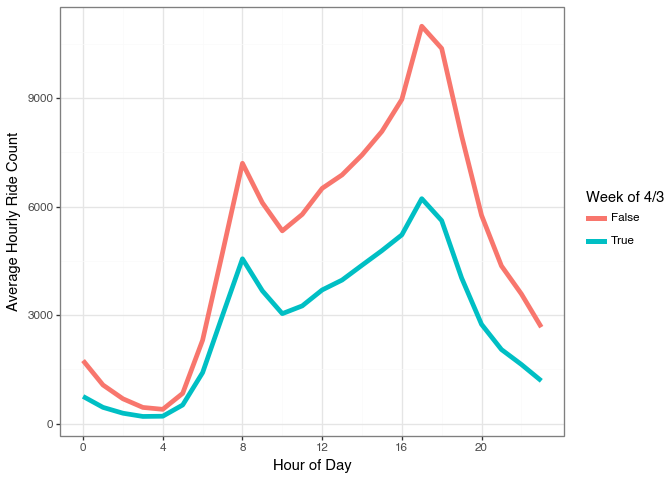

In this post I’ll walk through how you can use the same principles behind Gradient Boosting Machines (GBM) to predict parameters of models in the same way traditional GBMs predict 1-dimensional targets. This allows us to get the benefits of Gradient Boosting (large feature sets, high dimensional interactions, modeling at scale) to fit things like smoothing splines, survival analaysis, and probabilistic models. Its not a modeling silver bullet, but I really enjoyed putting this post together. Let’s dive in.
Gradient Boosting is a Machine Learning algorithm that fits a series of decision trees; each successive tree attempts to improve the predictions from the set of previous trees. It (generally, there are many GBM implementations out there now) does this with two steps: 1. Before fitting a new tree calculate the gradient of the loss function we are minimizing at each observation 2. Fit a new decision tree that predicts^* this gradient and then add this prediction to the previous predictions.
_(*) technically fit the negative gradient, we want the loss to go down_
Recently I was reading about Generalized Random Forests (GRF) to learn more complicated models than traditional Random Forst. This post started as a walkthrough of that technique, but I wanted to try something I’ve always had an idea for first; Can we use a GBM to fit distributions, not just make individual predictions. In this blog post we are going to learn the coefficients for a spline function over the hours of the day using the NYC Citi Bike dataset with Gradient Boosting. Here is an example of what I mean:
[chart_that_shows_splines]
shape: (5, 7)
hour_start
ride_date
ride_hour
ride_count
weather_tmin_c
weather_tmax_c
weather_prcp_mm
datetime[μs]
date
i64
u32
f64
f64
f64
2022-01-01 00:00:00
2022-01-01
0
1246
10.0
13.9
19.3
2022-01-01 01:00:00
2022-01-01
1
1379
10.0
13.9
19.3
2022-01-01 02:00:00
2022-01-01
2
1141
10.0
13.9
19.3
2022-01-01 03:00:00
2022-01-01
3
578
10.0
13.9
19.3
2022-01-01 04:00:00
2022-01-01
4
323
10.0
13.9
19.3
The Data
I’ve downloaded 4 years of the Citi Bike usage data and aggregated by the number of reachs in each hour of each day. Then I’ve also added the high and low temperature for that day as well as the inches of rain. If this were a proper forecasting model you’d want the predicted weather for a day so your model was properly calibrated but this is fine for having features to learn parameters from. One unique thing about this data is that I have stored the hourly ride counts and the hour of the day in an aggregated polars array. This is so the splits will work on the daily level, since I need to generate spline coefficients for each day and apply them to the 24 hour range. If I was using a traditional GBM I would use the ride_hour as a feature and predict the hourly counts.
shape: (5, 9)
dow
woy
year
high_temp
low_temp
precip
ride_date
ride_hour
ride_count
i8
i8
i32
f64
f64
f64
date
array[i64, 24]
array[u32, 24]
7
27
2025
73.04
89.96
0.0
2025-07-06
[0, 1, … 23]
[3078, 2013, … 2860]
5
5
2023
12.2
35.96
0.0
2023-02-03
[0, 1, … 23]
[631, 346, … 483]
5
30
2023
78.08
93.92
0.0
2023-07-28
[0, 1, … 23]
[1857, 1057, … 3784]
7
16
2023
51.08
66.92
1.460631
2023-04-23
[0, 1, … 23]
[714, 240, … 1290]
7
5
2024
31.1
44.96
0.0
2024-02-04
[0, 1, … 23]
[1352, 891, … 857]
Lets use this data to fit a traditional GBM on the hourly data and visualize some results.
Traditionally Gradient Boosting is fit by learning direction to move each prediction individually by using the gradient of that observation’s prediction against the loss function as a “psuedo-label” to fit a model to predict. We can use the same procedure to fit a set of parameters and optiize them with the same algorithm. Then we we need to make a prediction we can use the prediction parameter values for that observation.
In our example we will calculate our parameter vectors \(theta\) for an observation \(x\) at any iteration \(m-1\) as the sum of all the individual predictions from our base learners \(f_m(x)\)
In our example we need one extra step. If \(b(\theta, x)\) is an individual model that generates predictions for a set of parameters \(\theta\) and an observation \(x\) then we calculate the gradients by how well the predictions from \(b(\theta, x)\) predict our loss function \(L\):
\[\triangledown L(y_i, b(\theta_{m-1}, x_i))\]
Then our decision tree will use \(-g_{\theta}\) as the multitarget outputs and we can fit a decision tree to these targets. Since we have multiple parameter values in a smoothing spline we use a multitarget algorithm to make predictions for each dimension.
Lets ease into this by mimicking what the tree splitting algorithm does to find optimal splits but with our paramters; coefficients for a smoothing spline of the hours of the day.
Optimal Spline Splits
Lets walk through this without worrying about trees and gradients. The goal here is to pick up on which feature value results in the most unique daily ride shape. We’ll loop through values in a feature as the tree splitting algorithm will do. But for a first pass we will just measure how much variance there is from using the group average to predict the hourly ride counts. So for example we will measure the squared error from the observed counts with a single day of the week’s average, and then do the same for all the other days as one group. The day with the lowest combined Sum of Squared Errors does the best job of splitting the data into coherent days of the week.
So Sunday has the most unique shape by this measure. The other days would have had more total error across all observations if we had split on one of them instead.
shape: (5, 2)
woy
error
i64
f64
14
1.7068e11
15
1.7146e11
13
1.7213e11
12
1.7354e11
16
1.7379e11

I think this may be a data problem with some values missing or something. I don’t know why early April would have the least amount of rides? Maybe spring break for the kids? Oh wow, that is the answer haha.
Smoothing Splines
Now we can actually get to fitting our Gradient Boosting Spline Model. If you want an introduction to splines I’ve written a couple different posts on this topic:
For our model we have to do a little pre-processing to be ready for the fitting process
Build our spline basis for the 24 hour period of day
Write a function to generate predictions with our flattened hourly data
Write a function to calculate the gradient of our loss function
N_KNOTS =12x_day = hourly_df['ride_hour'].unique().to_numpy().reshape(-1, 1)spline_hour = SplineTransformer(n_knots=N_KNOTS, include_bias=True).fit(X=x_day)N_SPLINES = spline_hour.n_features_out_bs_day = spline_hour.transform(x_day)print('Example of Basis Activations for different hours')for i inrange(6):print(f'Hour {i*4}: {display_vec(bs_day[i*4, :])}')
Example of Basis Activations for different hours
Hour 0: ▂█▂▁▁▁▁▁▁▁▁▁▁▁
Hour 4: ▁▁▃█▂▁▁▁▁▁▁▁▁▁
Hour 8: ▁▁▁▁▃█▂▁▁▁▁▁▁▁
Hour 12: ▁▁▁▁▁▁▄█▁▁▁▁▁▁
Hour 16: ▁▁▁▁▁▁▁▁▅█▁▁▁▁
Hour 20: ▁▁▁▁▁▁▁▁▁▁▆█▁▁
Here is where things start to diverge from traditional models though. I do not want each tree \(f_m(x)\) to produce a prediction of \(\hat{y}_m\). I want each tree to predict the optimal spline coefficients for that gradient step \(\hat{\theta}_t\). So we will need to know the gradient of the loss function for each spline coefficient and each observation. Luckily, jax makes this easy. We can define our loss function once that operates on a single observation. Jax will then calculate the partial deritaves automatically with grad. And we can scale this to an array with the vmap function.
(34368, 14)
(1432, 24, 14)
def loss_i(coefs, bs_array, y_array):""" Calculate the scalar loss for the input, spline transformed data Parameters: coefs: [b,] 1d array from numerical procedure bs_array: [24, b] spline transformed data y_array: [24, 1] target values """#x_array_ = x_array.reshape(-1, 1) y_array_ = y_array.reshape(-1, 1) preds = jnp.dot(bs_array, coefs.reshape(-1, 1)) error = jnp.power(preds - y_array_, 2) penalty = jnp.sum(jnp.square(jnp.diff(coefs, 1)))# using mean instead of sum to keep the total loss numbers low...I think that's ok error_array = jnp.mean(error) return error_array +0.01* penalty# vectorize our loss function to work on arraysloss_array = vmap(loss_i)# Calculate the gradient of a single observation# grad only works on scalar output, so we have to vectorize them seperately grad_i = grad(loss_i)grad_array = vmap(grad_i)v, g = value_and_grad(loss_i)(coefs_init, BS_daily[0], y_log[0])print(f'Loss function value for one day: {v:.2f}')print('Gradients for each spline coefficient for that day:')print(np.round(g, 2))
Loss function value for one day: 1.03
Gradients for each spline coefficient for that day:
[-0. 0.01 0.11 0.19 0.12 -0.05 -0.16 -0.22 -0.24 -0.24 -0.22 -0.14
-0.05 -0. ]
I’ve initialized some coefficients to predict a flat line, coefs_init. We can calculate our initial gradients and thus psuedo-labels to use in the first tree with our gradient functions. One technical note is the coefficient vector needs to be the same length as the X and Y arrays I’m using for vmap to accept it. Once we start fitting trees this will be the case, but when I created by coefs_init values originally I just used a 1d array for all values. That’s why in the following code cell I repeat it to match the length of our data.
We now have everything we need to update our spline coefficients: 1. coefs_init: an initial set of smoothing splines to produce a flat prediction 2. grad_array: a function to calculate the gradients of our predictions with respect to the coefficients at each observation 3. labels_init: The initial gradient values to use as a our psuedo-labels for our first iteration
Lets fit one decision tree with our features to predict the gradients of the splines for each observation
from sklearn.tree import DecisionTreeRegressorx_features = daily_df[FEATURE_COLS].to_numpy()tree_init = DecisionTreeRegressor(max_depth=2).fit(x_features, labels_init)
That’s it for today’s post. I’m excited to take this concept even further to fit more types of models. If you want to make sure you see any future post I write you can follow me on Twitter or BlueSky.